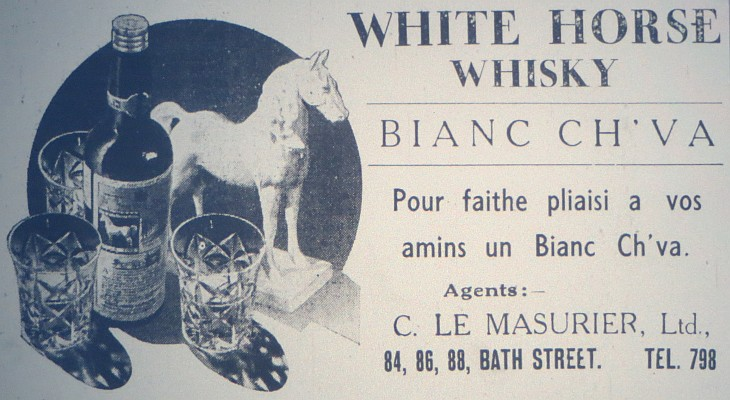

Eh ben y a tchique temps j'avais yu tchique bord que les affaires dans une certaine paraisse q'cmenchaient à être mouaissies. I'a tchique séthais je me promenais dans un petit village, j'me mêli avec une foule de personnes et je les suivit, jusque iou qou s'arrêti. J'ouï une personne qui dis à une autre, montem, et j'monti j'pensais que s'était pour mé, jamais je n'yavais tai, mais quand j'eu montai, j'me trouvi dans ubn grand appartement tout rempli et ben écquéri. J'en fut tout ébahi, bain vite j'me muchi drièthe le portrait d'un homme d'un grand esprit, et de la, tout tranquille j'écoutit, mais i avait tant de monde et y faisait si caux que j'y failli m'endormi. Nou'n 'ouiait clinne cya et j'n savais pas pour qui que tout shu monde s'y rassemblit, j'en fut pas longtemps sans ouï. Bétot j'vis, un p'tit bouan homme s'aoustrefais y fouilli, mais, une bouanne fais de sa pouchette, une maountre i sortit, pis a une belle grande haouloge sans casse y r'gardit l'heuthe, et compathit, garçons, il est temps de qu'menchi. Et pis j'ouï un homme qui disait, i n'a pas tai tréjous de même, i pathais doux comme du myi. Tout de suite j'vit qui s'agissait d'êlection pour Chantyni. Ah! j'tai là que j'êcouti. Enfin ne v'là le p'tit bouanhoumme qui qu'menchi à lièthe un papi, sinnai, je ne peux pas vos dithe par tchi, mais ch'est par un homme érudit. Après chla, le bouanhoumme qu'menchi sa brévièthe, mon doux ch'est coumme eunne histouèthe; enfin y d'mandi ès électeurs (car chan 'tai tous, et des véthitables guerrièrs, y 'taient tous v'nus là pour voté et d'fendre lûs foyès, il' avaient tous ouï qué lûs p'tit pays 'tait mins en dangi) si parmi les leutrs, ch'tait ach'teu le temps de prendre l'occasion de faithe eunne nomination. Après ch'la le p'tit bouanhoumme s'assiévit, s'ertouânni et dans le feu dans un grais drièthe li, daeux mios d'chèrbon il y j'tit. Daeuxtreis s'condes après un biau p'tit homme se l'vit et d'mandi eunne tchestion au p'tit bouanhomme qui rêpoundi: nânnin.
Eh bein, mêssieux, puisqué j'ai l'occâsion, j'men vais vos faithe eunne nomination. Ou' m'dithais après si j'avais ieu raison. A la batâille d'Apincout, san nom 'tait parmi les seigneurs de la Cour, ou savèz bein, tchiqu'uns. Nou' dit qu'sân frèthe a 'tait ou est Député, sa d'meuthe est à La Mouaie; de proféssion i' n'a pon, mais il est agriculteur, éleveur, etc., et en touos sens un vraie solide garçon. Ou' pouvèz veîs par la liste des noms qué j'vos ai lu, qué ch'est tous du monde qui l'ont bein counnu. J'en m'en vais pas continué, j'n'avons pon acquo fini, mais ch'est là l'houmme qué j'vos r'quémande, et couomme j'vos l'avais dit j'tais saeux qu'ou' s'êtes contents d'l'avé coumme Chantyni. Ah ça! bouannes gens, oquo eunne tchestion, par acclamation, ou' m'dithais si j'ai ieu raison.
Clou! clou! j'pensais qu'tout 'tait fini et j'avais 'tèt m'piéchi sûs un aie du foyi, maîs j'tais trop llien et je n'pouvais ni ouï ni vaie et j'm'en fut m'coulé souos eunne magnifique tablle iou qu'iavait un houmme avec des jaunes souliers. Y'en avait treîs aoutres ov' li, mais avec lûs pîds, i' n'pouvaient pas m'adèrchi. J'allais d'un but à l'aoutre j'avais tout pllien d'run et j'les ouïais chuchotté et tchiques feîs s'entre pâslé.
Né v'là un houmme tchi s'lève i' met des lunettes ch'tî là, pas sûs l'but d'sân nez; i' pathaît frais râsé et l'pûs souvent i' met du né. I' lûs dîs qui n'sortait pas souvent, mais il avait ouï à la onzième heuthe que n'y'avait pas de candidats tchi voulaient s'mettre en avant et il n'avait fait l'exception et avait prins l'occâsion de s'y joindre avec daeuxtreîs mêssieux pour considéthé la situation. Eh bein, mêssieux, ou' d'vez êtres touos contents, pour mé ch'est pûs qu'piaîsant de pouvé mettre mân nom en d'sous du proposant à la nomination d'un houmme si charmant.
Mais y fallait un aoutre Candidat. Ah! ne v'la eun des guerriers qui s'lève, y pathaisait sérieux. Messieurs y qu'menchit j'ai étou a proposer un candidat pour Chantgni, et j'vaux dithé la raison pourchi. J'avons un petit village au dessus de la plage, comme y'en n'a pas fort; il faudrait aller en dehors, enfin, chest la pus vieille ville tchi dait vaux interraissi, n'vla la raison qui faut tchi y ait un Chantgni.
Chest le centre politique, y s'en suit étout de la Police Honorifique, ne cherchons pas a porter atteinte au système honorifique, si le coup de grace au système je donnons, je portéthons avec nous notre condamnation. Le nom de mon candidat n'a jamais tai W.J. Tard, mais siéz touos les anciens fermiers, des véthitables guerriers i avaient tous un Dart, et dans le mais d'Août il faisaient souvent servi et jamais ne laissais roui. Chest un entrepreneux, un homme pratique, i demeurs au centre politique, le v'la la raison de li donner une piaèche dans la Police Honorifique.
Ne v'la le biau petit homme tchi se r'lève, et dit: Messieurs, je d'vons être bain r'merciants au Moussieu tchi v'nait d'être proposè, car ch'tait à la dernièthe heuthe, à forche d'être tormentait et avait fait preuve de citoyennetai, et en signant mon nom chest un piaisi pour me de seconder la proposition.
Whew! j'métais trop loin avanchi quand euin avec son talon de botte ma tête i capuchit, j'fut quasi étourdi. J'entendi le petit bouan homme dithe y'a ti d'autre candidats Messieurs? puisqu'oun rêponnais pon je clos la discussion, et puisque ieun d'ieux a occupé la charge de Vingtenier y prendra prémièthe piètche de Chantgnier.
Messieurs se fit i, je vos annonce de bouannes nouvelles? chest que pisque y'a pon d'autre proposition in n'itha pas d'frais d'Election et je déclare les deux Messieurs proposéz et secondéz êlus à la charge de Chantgni et je signifie à chés deux Messieurs de se présenter en Cour Royale pour prendre le serment de citoyen loyal.
Du coup que le petit bouan homme avait annonçai le résultat de l'êlection ch'fut dans un moment, une véthitable biase d'occasion et le pouore caouan en profitit et se r'tithit, dans un anti room, le petit, iou qu'javais dejà senti chique chose tchi pouorrait me donner appétit, car je q'menchais a avé le failli. J'néthais jamais cru q'yéthait ieu un tait antiroom petit, je'n'sait pas quesqui si passe tchique fais, mais j'ai idais d'ihallait acuo tchique sethéz, nou n'peut pas vais tout dans une fais.
J'me couli drièthe la porte et j'pouvai vais dans l'grand appartement car la iase s'était r'levèz.

Comme j'épiais drièthe lûs je vit le premier proposai tchi s'était levé et y remerciait le proposant et aussi le secondant et touos les guerriers tchi taient v'nus en avant et y lus disait que puisqu'i taient contents i yétait itout, et depis qu'ils n'avaient fait autant ils lus demanda à tou de venin prendra des rafraîchissement. I n'pouvait pas acuo lus en dithe fort mais il espéthait bain qu'ils aceptethaient un petit verre de port; pis la biase se r'levit comme de pus bé; tout de suite j'me couli souos le but d'une table, avec mes iers de caouan j'avais veu tchiche chose chès et j'fut vaie, j'tait un brin de corinthe, j'lavallit tout de suite et j'me r'mins drièthe la porte car j'ouiais du devis. Ch'tait un homme tchi d'visait, j'pensais que chan'tai ieun qui tait s s'mathier, car i disait j'promets d'y obéir, d'laimer et d'l'honorer, car i' dit étou qu'avec les conseils du boss il espéthait bain faithe son devé comme Chantgni; il avait tréjous r'fusé, mais quand il avait voeu les Messieurs tchi taient v'nus li demandé i n'avait pas peu les refusé. Il esphéthait que les malfaiteurs n'li donnaient pon trop de tracas en semant la terreur, car i n'était pas comme s'n'amin. L'anglais tchi tait grand et fort et paslait bain l'jerrais. I lus dis èttout que duthant sa carrière politique, i souastiendrai le système honorique. I mentionni qu'il tain bain aise de pouver lus dithe qui considéthait que les affaires dans toute la paraisse jusque sus les quais "second to none" étaient - j'éthais deu vos l'dithe, i paslait en anglais - il criyait bain ètout que quand i f'thait le tour de sa ville, i s'ait obligi de porter une petite bouteille d'huile. - Enfin il lus dis tchi n'connaissait pas les White Horse ni les soudards Black & White, mais puisque ch'tait en g'menchant, avec san collègue, il avait l'honneur de lus offrir des rafraichissement. Il espéthait que dans trais ans i s'aient acuo tous vivants.
Ne v'la le biau petit homme qui se lève et dit Messieurs, Je v'nons d'élithe deux nouveaux Messieurs comme Chantgniers, mais qu'est j'allons faithe pour les viers? et bein j'menvais vos dithe, une obligation j'lus devons, et si ou z'êtes comme mé, j'lus têmoignons, sur un mio de parchemin ou signnais le votre et y'y sinnai man nom et ainsi Messieurs j'en fais la proposition. Név'la le guerrier sérieux tchi s'lève et lus dit accuo une fais, Messieurs si y'a deux hommes à tchi je devons des remerciements, chest à nos deux Chantgniers sortant des rangs; j'en avons un ichin avec nous en dedans. Je r'grette que l'aoutre guerrier ne s'ait pas avec nous, mais j'vos asseuthe bain qu'il a une mauvaise toux, mais j'espèthe que bain vite y se r'guéthitha et dans p'tit temps y rapathaîtra, et en secondant la proposition j'sis bain aise qui n'y ait pas opposition. Man doux, mon doux, dans une clin d'ié ne v'la un divers rémuage et la biase oquo une fais, le boss éthait deu dithe à la maitresse d'avait une cannéez de fieilles de thé pour estruellé sus l'pianchais. J'pensais de m'faufiller souos la table mais qui qu'un poussithes la porte si raide et j'failli être églami contre le brasselage d'bonneur que la porte contre le genou d'un homme ou frappi j'nens éthais jamais vivant sorti.
Sabre bouine, le caquetage, le babillage i fallait oui, ch'tait comme d'esfants réjouissants. Y'un avait ti du devis nous ne pouvait pas savait chès tchi disaient sinon ch'tait en angliais. What will you have, Black or White ou White & Black, et pis le White ch'tait diaoe de dans une bouteille bianche avec une pompe, et le Black était de la gache toute nèthe de corinthe. J'en ramassi tout che que j'vouli. Dans un instant i sembliait que ch'tait les glass ringers qui q'menchaient a jouer et pis ch'tait touns les guerriers tchi piètchaient lus verres l'un contre l'autre et iun disait en angliais I drink to you, may your health and mine in three years time, be as good as it is now in nineteen & nine. Et iun autre en Jersiais, à la santé man F'lip et à la sienne de Jean, absent. Chès ti dommage nous ne vos verra pas si souvent. Whew, whew, j'allais et je venais souos la table et me méfiant de rain quand un gros bouan homme avec son pid sus unne de mes longues piummes il pilvachit et mé, a forche de haller oul êrachit; ch'ti la je cré était un boulangi. Ah! j'en vouli pas daoutre arrêté et manque d'une de mes pus belles piummes j'men r'fut siez mé, mais j'men vais vous dithe ou pouvez bain en rithe, j'ai veu acuo d'autre chose, enfin i faut laissi tout pour ach'teu et vos garantis que la préchaine fais j'ithai voir qu'est qui ya dans un gras vier baheu; je crai que j'y trouvethai ma piumme. Abentôt.
Caouain
23/1/1909
Viyiz étout: